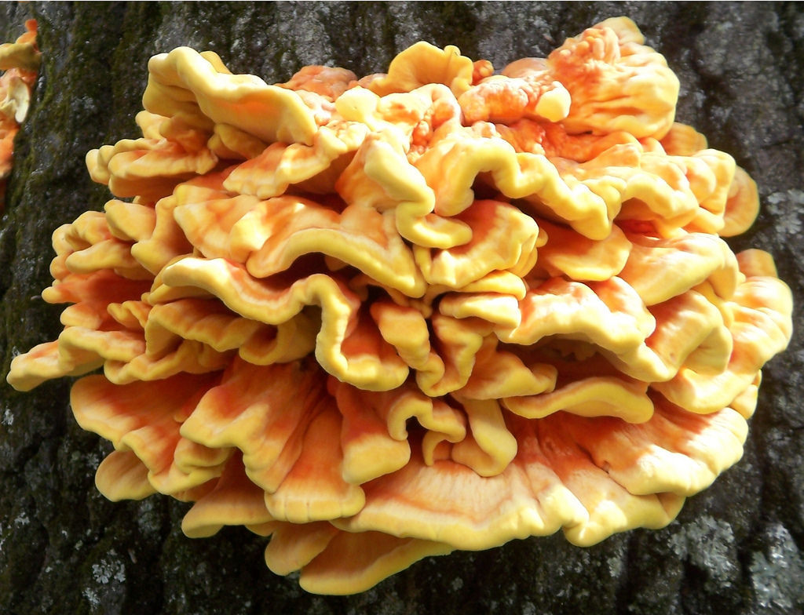

Foraged mushrooms: Chicken of the Woods

Description
A bright yellow mushroom which grows in shelves on trees. Easy to identify and very tasty!
- A kg of freshly foraged chicken of the woods
- One large onion
- Three cloves garlic, crushed
- Juice of one lemon
- 250ml white wine
- Clean mushrooms gently yet thoroughly using a mushroom brush
- Slice onion and fry in vegetable oil on medium heat
- Add crushed garlic and sliced mushrooms
- Allow to fry until mushrooms and onions appear golden brown
- Add wine to simmer
- Mix in lemon juice to taste